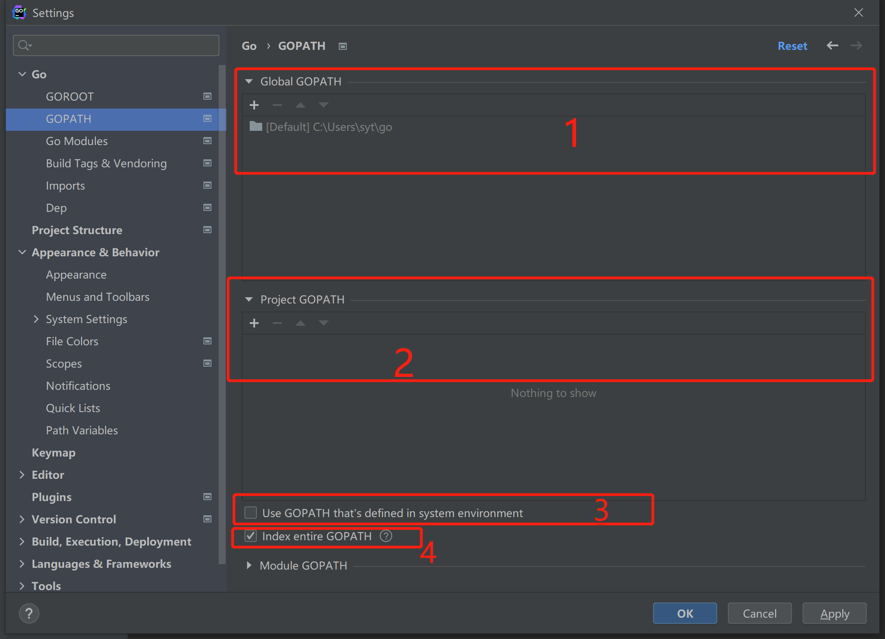

10 Go 语言的依赖管理¶
Go语言的依赖管理¶
依赖指的是编一个程序不可能所有的代码都是自己写，我们需要使用大量的第三方库，我们把程序的功能建立在别人已经实现的基础设施上面。
依赖管理有三个发展阶段：GOPATH, GOVENDOR, go mod
GOPATH不怎么好用，于是 GOVENDOR 短暂的出现了。go mod 出现在2018年，相较于前两种，go mod 可以更好的进行依赖管理。
GOPATH¶
GOPATH的管理方式简单来讲，就是不来管理。
所有的包都去 GOPATH 里面找，所以这样 GOPATH 就又大又繁琐。
GOPATH可以直接使用<font style="color:rgb(51, 51, 51);">go get</font>命令下载第三方的包，有以下三个文件存放相关的代码。
<font style="color:rgb(51, 51, 51);">src</font> ：项目的源代码
<font style="color:rgb(51, 51, 51);">pkg</font> ：编译后的生成文件
<font style="color:rgb(51, 51, 51);">bin</font> ： 编译后的可执行文件
配置过程如下：

选中红框中的内容代表：把你在环境变量中配置的GOPATH信息加到你所创建的的项目中，而且会导致无法导入第三方包，一般来说是没必要的，如果在后面有需要可以在项目配置中重新进行设置。
创建这三个目录结构：

设置demo的GOPATH：

1是Global GOPATH，默认的是在系统环境变量中配置的GOPATH路径；
2是该项目的GOPATH，可以选择该项目使用的GOPATH，一开始建立项目的时候，只有Global GOPATH，最好不要使用全局环境；
3是是否使用系统环境的GOPATH，取消勾选；
4是将当前项目作为一个GOPATH。
GOVENDOR¶
假设有如下场景：
你的工程引用了一些外部包，且这些包仍有更新的可能，或者你们项目组另外开发一些公用包，且还在并行开发迭代中，如果你的项目代码本来运行稳定，却因为外部包的更新导致运行出现问题，你是不是很郁闷？所以为了开发时或者部署时，将外部包版本确定，在go1.6之后引入vendor目录，即你的项目工程中，多了个vendor目录，执行go build的时候，会在vendor目录下边寻找你引用的外部包，这样每次编译的时候，当外部包修改，测试通过后，将新的外部包内容替换到vendor中，不断的迭代更新，保证了外部包的稳定，也不会影响到你当前的代码了。
————————————————
每个项目都有自己的vendor目录，存放在第三方库，因为有时候过于复杂，就诞生了大量的第三方依赖管理工具：glide, dep, go dep, ..
由于不好用，就被淘汰掉了。
Go mod¶
在 goland 2021.2版本中，Go 选项现在是 Go modules 项目的默认选项。
包管理模式解决了以上两种依赖管理的问题
- 自动下载依赖包
- 项目不必放在 GOPATH/src 内了
- 项目内会生成一个 go.mod 文件，列出包依赖
- 所以来的第三方包会准确的指定版本号
- 对于已经转移的包，可以用 replace 申明替换，不需要改代码
案例¶
在两个工程文件里面，互相调用的时候，应该如何写呢？
在同一个 gopath D:\study\go下，例如，D:\study\go\hello ，D:\study\go\studyGoMod这个两个工程文件。
假如在D:\study\go\studyGoMod中的.go文件想要调用hello工程里面的方法。
就需要在在D:\study\go\studyGoMod的 go.mod 中，设置如下代码：
module goModStudy
go 1.17
require (
go.com/hello v 0.0.0
)
replace(
go.com/hello => ../hello
)
❗👾注意：在hello中，被调用的方法，不应该在在main包，也就是不在package main中。
更新: 2022-05-02 09:33:31
原文: https://www.yuque.com/xiaoshan_wgo/codingnotes/ysoqay